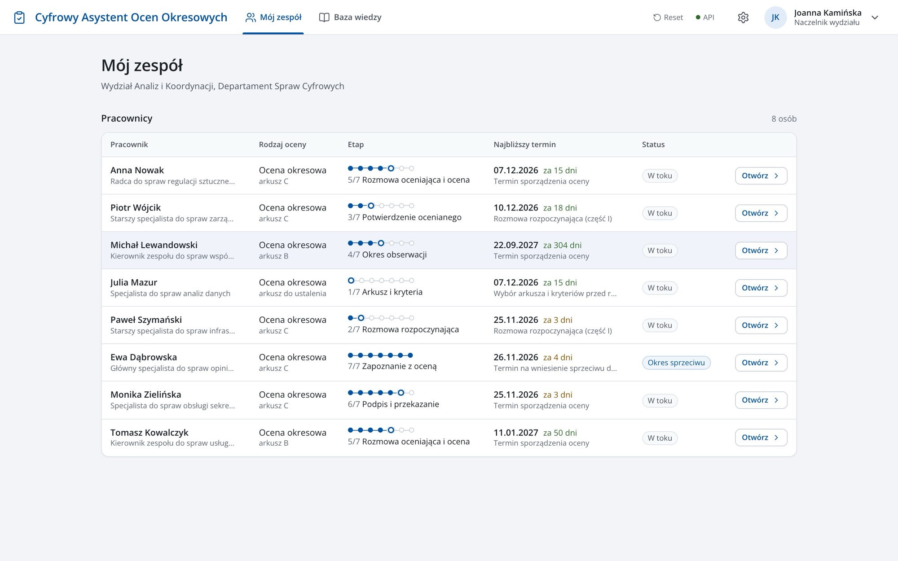
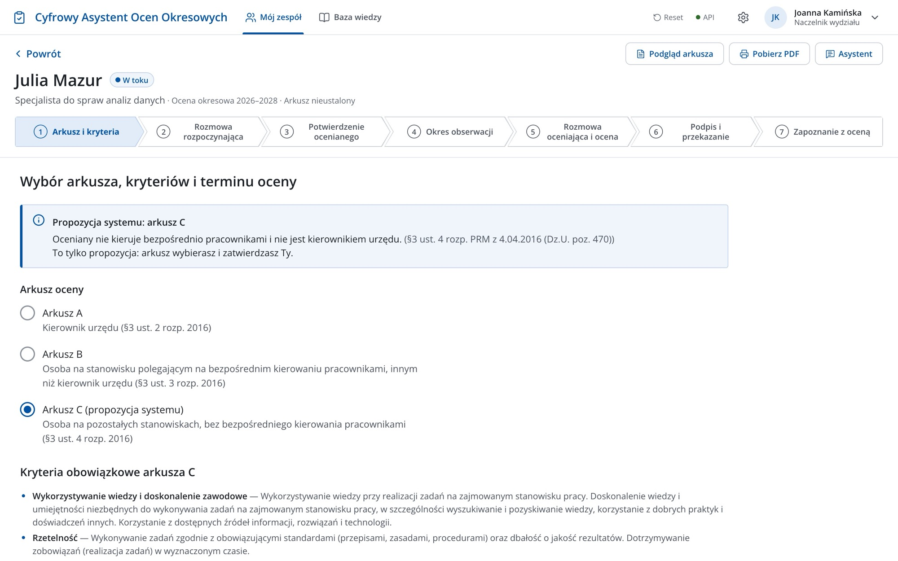
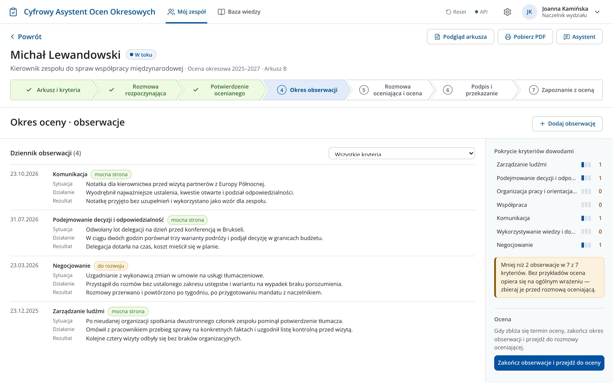
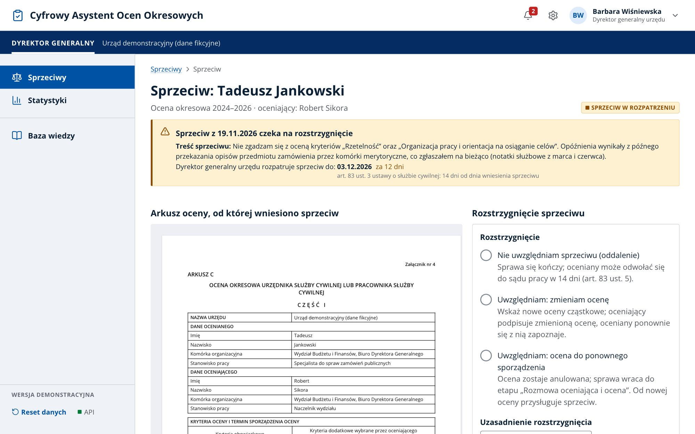
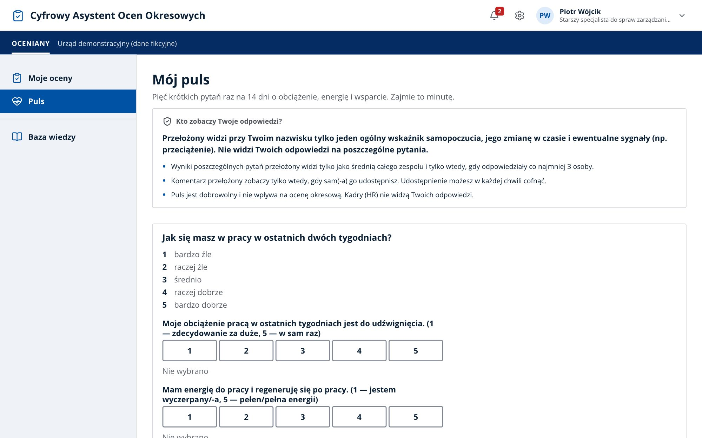
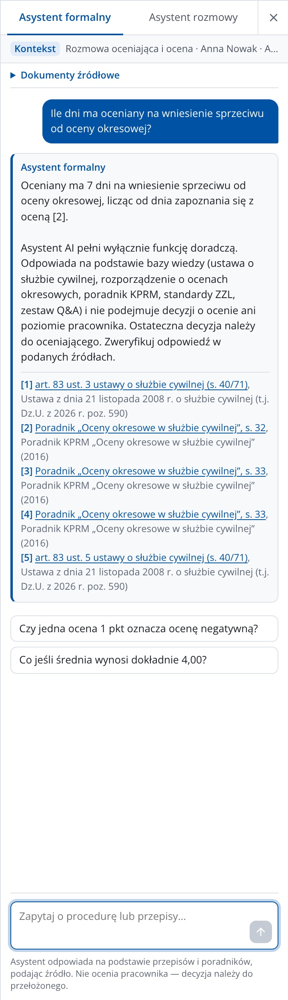
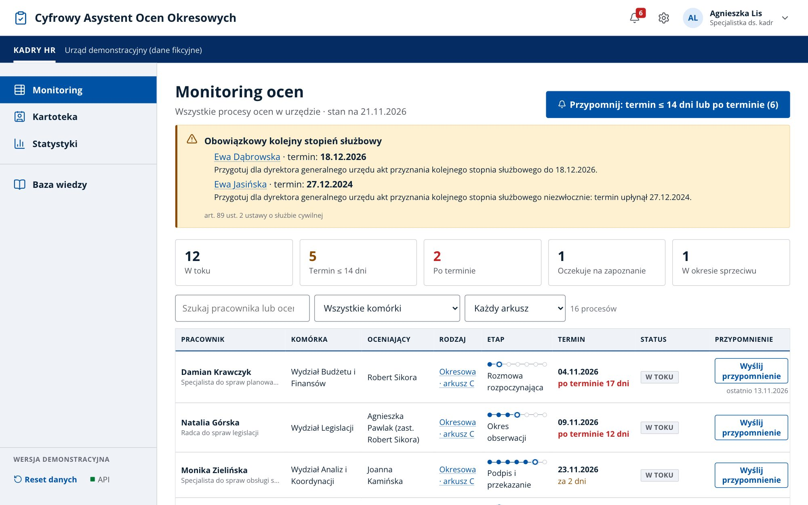

HackNation 2026 · wyzwanie KPRM
Prowadzi przełożonego, ocenianego i kadry przez całą ocenę okresową w służbie cywilnej: od wyboru arkusza do sprzeciwu, zgodnie z ustawą o służbie cywilnej i rozporządzeniem PRM z 4.04.2016. AI podpowiada i wskazuje źródło, a decyzję zawsze podejmuje człowiek.
Problem
Nie jest kadrowcem ani prawnikiem. Potrzebuje prowadzenia krok po kroku i pomocy w przygotowaniu rozmowy, a nie kolejnego formularza.
Chce znać kryteria i oczekiwania od pierwszego dnia oraz wiedzieć, jakie ma prawa po ocenie.
Odpowiadają za przeprowadzenie ocen w całym urzędzie i rozpatrują sprzeciwy w terminie.
Rozwiązanie
Przełożony widzi swój zespół, etap każdej oceny i najbliższy termin. Otwiera teczkę i robi to, co system podpowiada na danym etapie.
Oceniany ma własne konto: widzi kryteria, potwierdza rozmowę i zapoznanie się z oceną, może złożyć sprzeciw.
Kadry monitorują wszystkie oceny w urzędzie i wysyłają przypomnienia, dyrektor generalny rozpatruje sprzeciwy.
Asystent AI odpowiada z przepisów i poradników KPRM ze źródłem, a wirtualny HR partner pomaga przygotować rozmowę i zauważyć przeciążenie zespołu.
Arkusz A/B/C wypełnia się sam z decyzji w teczce i jest pobierany jako PDF zgodny ze wzorem.

Widok „Oceny zespołu”: etap 1–7, najbliższy termin z przepisów i status każdej oceny.
Proces krok po kroku
Gdy oceniany nie może lub nie chce potwierdzić, przełożony albo kadry odnotowują datę doręczenia i bieg terminu.
W 7 dni (termin wg KC) do adresata z art. 83: dyrektor generalny (arkusze B, C) albo osoba, która dokonała oceny (arkusz A). Decyzja w 14 dni.
Nieobecność dłuższa niż miesiąc sama przedłuża termin oceny (art. 81 ust. 7); wniosek ocenianego o zmianę terminu (ust. 8 pkt 4) z decyzją i historią.
Krok 1 · kryteria

Etap „Arkusz i kryteria”: propozycja arkusza C z podstawą prawną.
Kroki 2–4 · rozmowy i obserwacje

Dziennik obserwacji kierownika zespołu (arkusz B) z ostrzeżeniem o pokryciu kryteriów.
Kroki 5–6 · ocena i podpis
Oceny cząstkowe 1–9 w skali z rozporządzenia, kryteria obowiązkowe i dodatkowe.
Kontrola formalna przed podpisem: każdy punkt z paragrafem.
Krok 7 · zapoznanie i sprzeciw

Dyrektor generalny: treść sprzeciwu, termin z art. 83 ust. 3, arkusz i trzy rozstrzygnięcia.
Terminy, nieobecności i powiadomienia
.ics do kalendarza.Wirtualny HR partner i puls zespołu
Puls nie jest częścią oceny okresowej. Podpowiedzi nie zmieniają teczki ani ocen: decyzja należy do przełożonego.

Widok pracownika „Mój puls”: zanim odpowie, widzi, kto i co zobaczy.
src/partner: reguły jako czyste funkcje z testami10 / 15AI i anonimizacja

Odpowiedź z linkami do stron ustawy i poradnika.
Kontekst: Pracownik: [OSOBA_1]. Trend pulsu: Stabilnie: indeks 4.6. Sygnał: Moment do docenienia. … Mocne strony: Rzetelność, Współpraca, … Pytanie przełożonego: Jak porozmawiać z [OSOBA_1] o jej obciążeniu pracą?
Imiona i nazwiska (w każdym przypadku), PESEL, e-mail, telefon i nazwy komórek są zastępowane znacznikami przed wysłaniem; serwer przywraca je dopiero w odpowiedzi. Kontekst teczki zawiera stanowisko, kryteria i obserwacje, bez danych osobowych.
POST /api/partner/ask (dane demo: „Jak porozmawiać z Anną Nowak…”)11 / 15Kadry i dyrektor generalny

Monitoring ocen: liczniki są filtrami, terminy liczone z przepisów, przypomnienia jednym kliknięciem.
Architektura i wdrożenie w urzędzie
React 19 + Vite (SPA), nginx. Interfejs po polsku, tryb ciemny, wysoki kontrast, powiększenie tekstu.
REST/JSON, logowanie JWT, role i uprawnienia sprawdzane przy każdym żądaniu, walidacja wejścia (Zod), PDF arkusza (pdfmake).
Opcjonalny; migracje same przy starcie. Bez bazy: tryb demo w pamięci.
Lokalny (Ollama) albo dowolny zgodny z OpenAI.
cp .env.example .env i docker compose up -d --build: PostgreSQL, API i frontend;
lokalny model: --profile llm (Ollama).Zgodność z przepisami
| Wymóg | Podstawa | W systemie |
|---|---|---|
| Arkusz A/B/C, kryteria obowiązkowe, ≤ 3 dodatkowe | § 2–4 rozp. 2016, zał. 1 | propozycja + walidacja |
| Rozmowa rozpoczynająca w 30 dni (7 po negatywnej) | § 7 | termin z przesunięciem z dnia wolnego (KC) |
| Skala 1–9, średnia, wynik pozytywny/negatywny | § 11 ust. 1 | wyliczenie i uzasadnienie wyniku |
| Uzasadnienie przy negatywnej, wnioski do IPRZ | § 11 ust. 3–4, art. 108 | kontrola formalna blokuje podpis |
| Wniosek o kolejny stopień służbowy | art. 89 ust. 1, § 11 ust. 5 | część III, następny stopień |
| Nieobecność > miesiąc, zmiana terminu na wniosek | art. 81 ust. 7, ust. 8 pkt 4, ust. 9 | przedłużenie z KC, wniosek i decyzja |
| Sprzeciw 7 dni do adresata, decyzja 14 dni, sąd pracy | art. 83 ust. 1–5 | adresat wg arkusza, terminy, wersje oceny |
AI nie zwraca punktów i nie zapisuje decyzji. Ocenę cząstkową zawsze wybiera przełożony; widać to w API i w interfejsie.
Podsumowanie
pełna ścieżka oceny okresowej plus sprzeciw, fikcja zapoznania i zmiana terminu
przełożony, oceniany, kadry, dyrektor generalny, administrator, każda z własnymi uprawnieniami
licencji: open source (EUPL-1.2), docker compose, opcjonalny lokalny model AI, działa offline